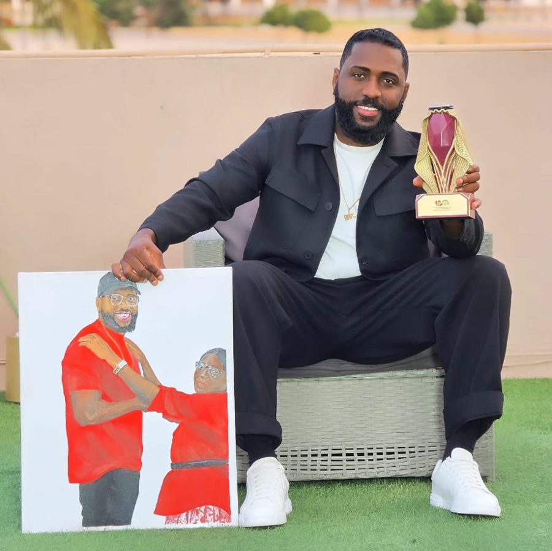
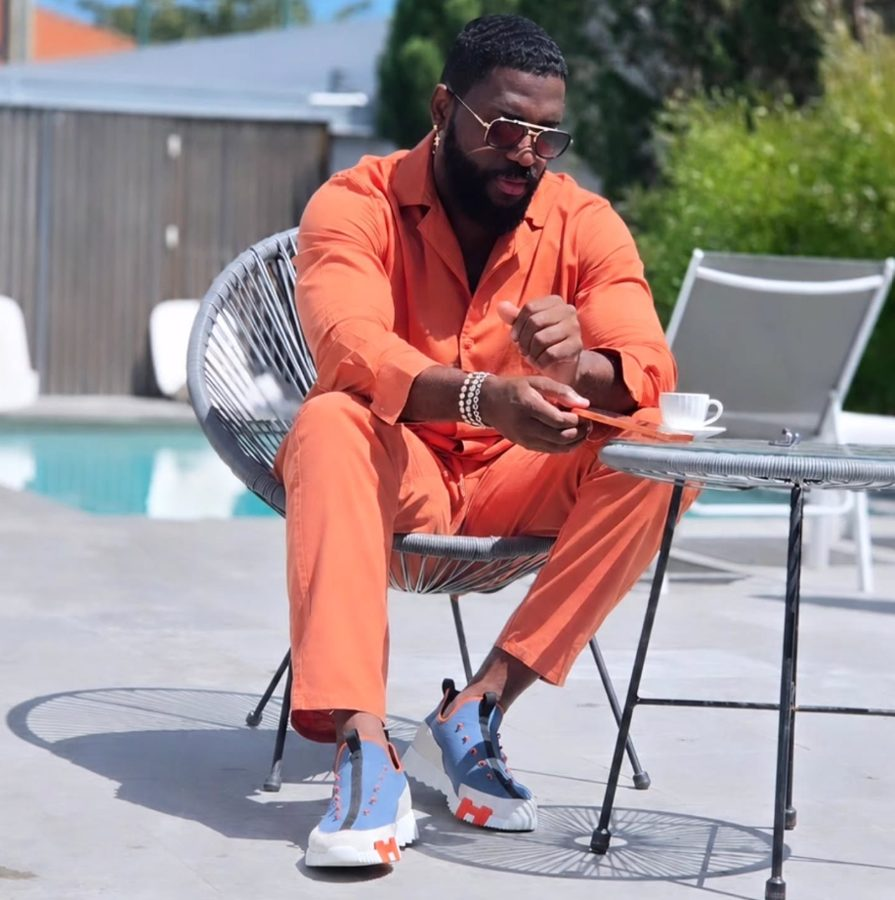
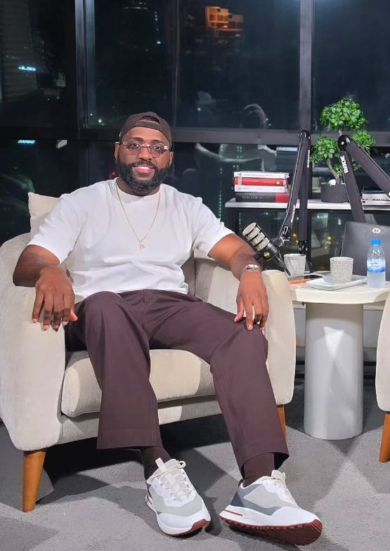

Com Fly Skuad · Luanda
Saiba quem se senta no sofá esta semana, leia a ficha do convidado antes do direto e deixe a sua pergunta para o Fly Skuad.
Os próximos convidados, com dia, hora de Luanda e estado do episódio.



Filipe Nunda Quiala · Luanda, 7 de março de 1988
Rapper, empreendedor, criador de conteúdos e influenciador digital angolano, com forte influência no hip-hop e no ecossistema digital de Angola. É a cara do Fly Podcast, um dos maiores programas de entrevistas do país e do espaço lusófono.